الواقع المعزز ليس مجرد "إضافة صور"، بل هو تكنولوجيا المعلومات المكانية.
هو نظام ذكي جداً يكسر الحاجز بين العالم الحقيقي والعالم الرقمي؛
فبدلاً من الانعزال داخل نظارة (كما في الواقع الافتراضي)،
تقوم هذه التقنية بإضافة طبقات من المعلومات
(مجسمات 3D، نصوص، فيديوهات) فوق ما تراه بعينك في الحقيقة.
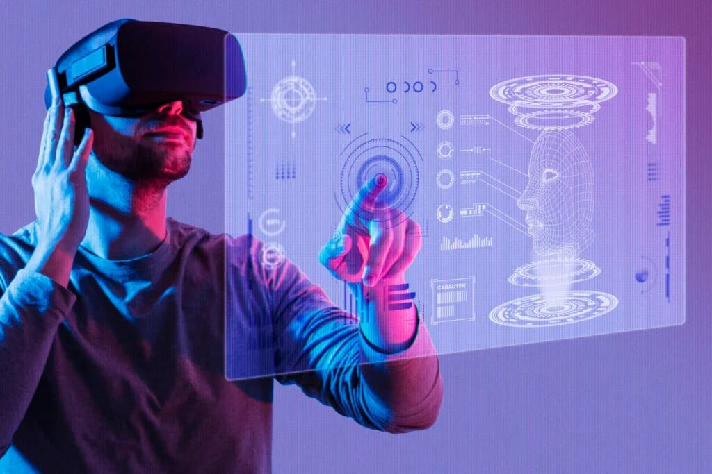
المعتمد على العلامات
يعمل عند توجيه الكاميرا لرمز معين (مثل QR Code أو صورة في كتاب).
غير المعتمد على علامات
القائم على الموقع
يستخدم الـ GPS لعرض معلومات بناءً على مكانك (مثل تحديد المطاعم في الشارع).
القائم على الإسقاط
إلقاء ضوء اصطناعي على الأسطح الحقيقية (مثل لوحة مفاتيح ضوئية على المكتب).
التراكب
استبدال جزء من الجسم الحقيقي بجسم رقمي (مثل تجربة لون طلاء حائط جديد).
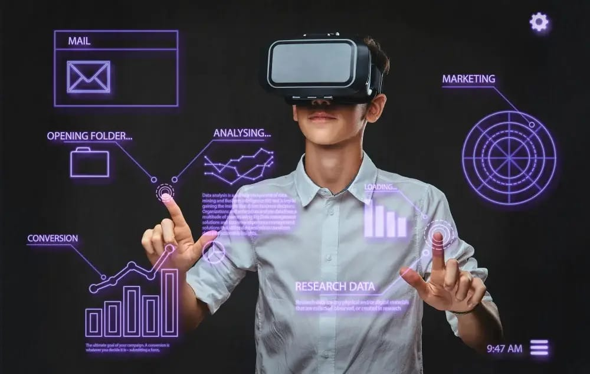
سهولة الاستخدام عبر الهواتف
لا يعزل المستخدم عن الواقع
يساعد على التعلم السريع
يحتاج أجهزة حديثة
يستهلك البطارية
مخاوف الخصوصية
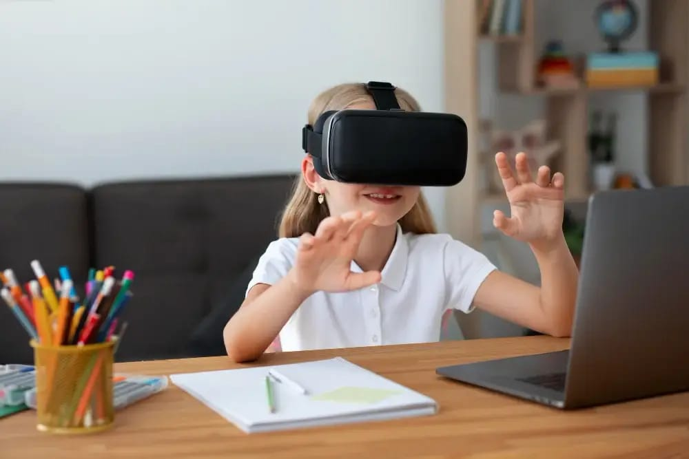
في التعليم تحويل الكتب الورقية لمنصات تفاعلية، استكشاف الفضاء، وإجراء تجارب علمية بصورة مرئية ملموسة.
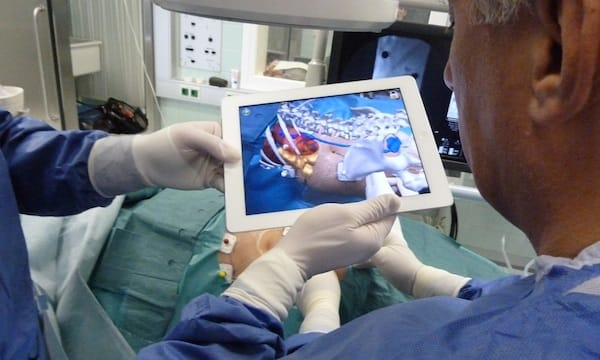
في الطب عرض بيانات المريض أثناء العمليات وتدريب الأطباء على محاكاة التشريح.:
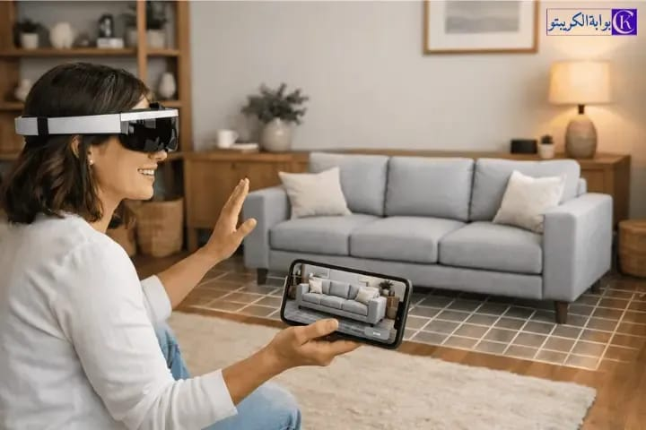
في التسوق ميزة "التجربة قبل الشراء" للأثاث والملابس، مما يحسن تجربة المستخدم.
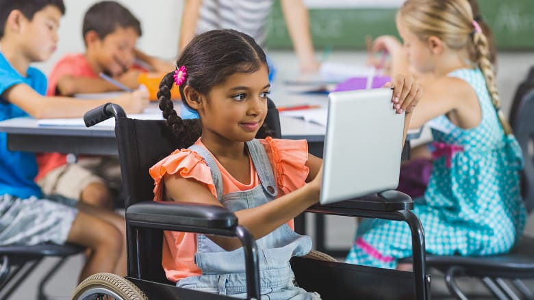
دعم ذوي الاحتياجات الخاصة
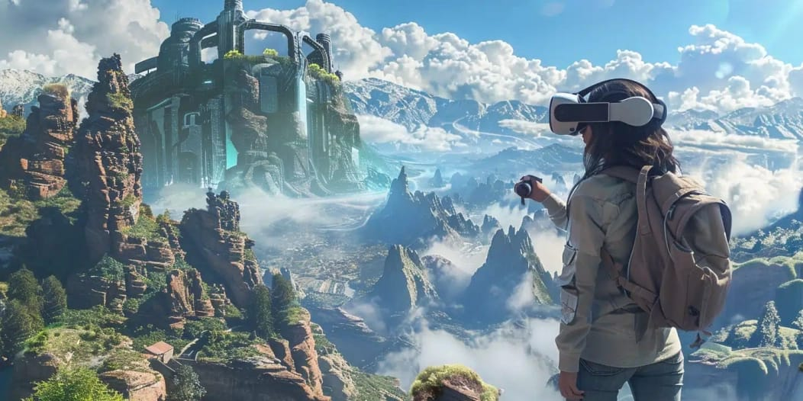
تعزيز السياحة والاقتصاد الثقافي
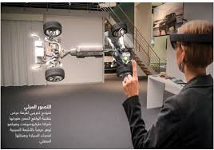
إلغاء الفجوة بين البيانات والعالم المادي
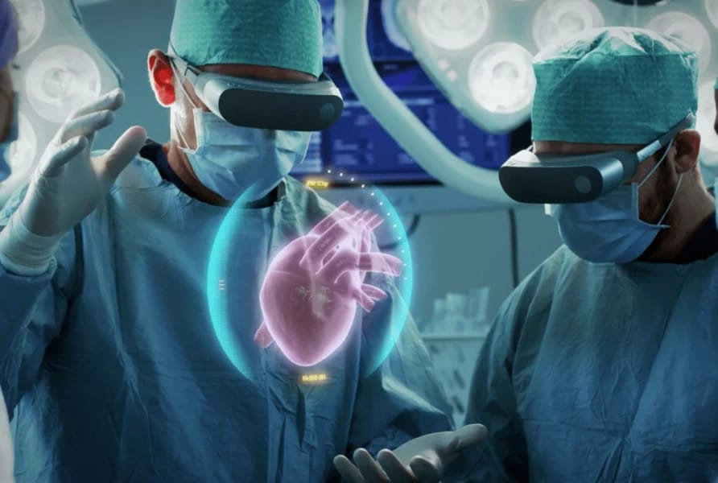
تقليل الأخطاء البشرية في الطب
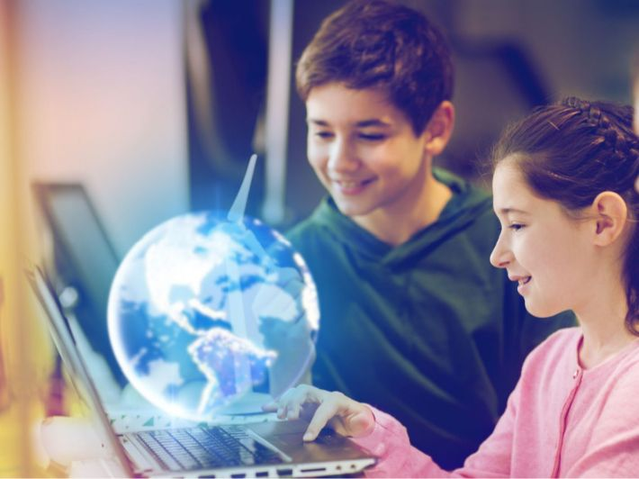
تحويل التعليم من "تلقين" إلى "تجربة"
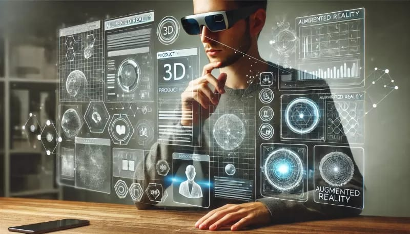
خلق فرص عمل ومجالات برمجية جديدة
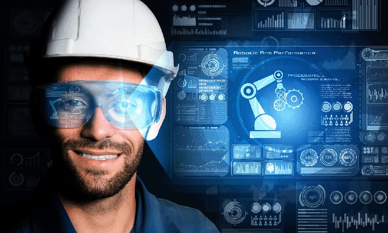
التمهيد لعصر الحوسبة المحيطة
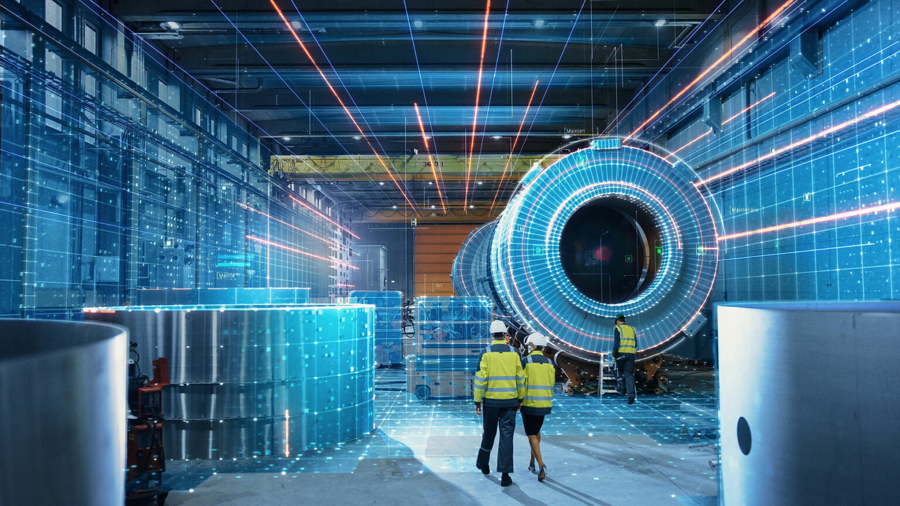
رفع كفاءة التدريب المهني والتقني